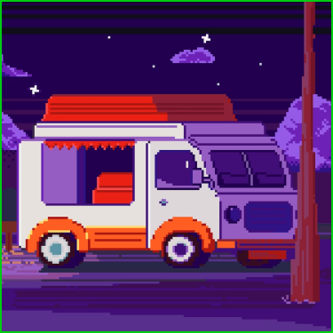

Фритрек и нулевой спринт: Подготовка к работе

Это было самое начало пути. На этом этапе важно было проникнуться основами и настроиться на учёбу. И, возможно, подумать, как новые знания могут повлиять на ваше будущее.
Проходить бесплатный курс было легко, ибо погружаться в html я начала самостоятельно. Основы я знала и было здорово, когда у меня получалось выполнять задания, которые казались мне раньше, чем то невообразимым, ведь я впервые затронула эту профессию. Начинать было не страшно, а очень интересно! Я хотела и "хочу" изменить свою жизнь связав ее с профессией "фротенд-разработчик".